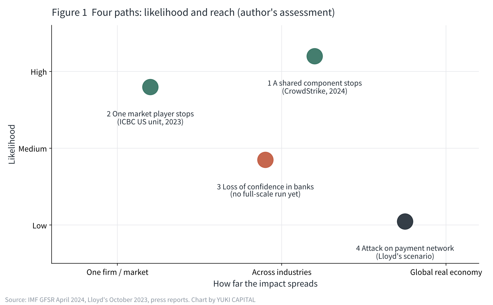
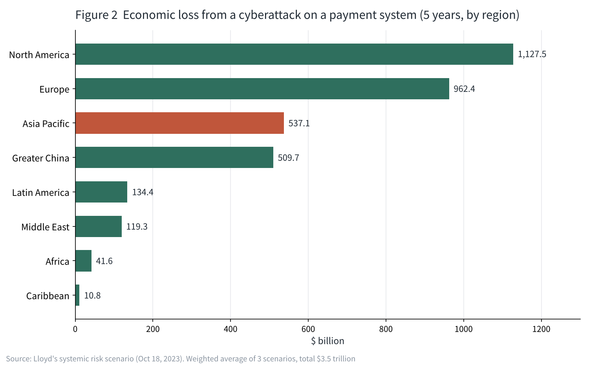

Could a cyberattack trigger a simultaneous global stock crash?
On October 23, 2026, the four bank stocks I hold in Japan all fell together. The same week, unauthorized access that may have affected 26,739 of GMO's servers had been disclosed.
Most financial crises have started with bad loans or sudden moves in interest rates. But a fall that begins with leaked or altered data has not yet happened in full.
In this article I use primary sources from international bodies and the insurance market to split the paths from a cyberattack to a global sell-off into four, and rank them by how likely they are.

Finance has become one of the biggest targets of cyberattacks
In its April 2024 Global Financial Stability Report, the International Monetary Fund (IMF) devoted a full chapter to cyberattacks as a threat to financial stability. According to the report, cyberattacks have more than doubled compared with before the pandemic. Attacks on financial firms make up nearly one-fifth of the total, and banks are the most exposed.
The size of losses has changed too. The IMF's estimate of "extreme losses" has more than quadrupled since 2017, to $2.5 billion. The upper limit of what a single incident can cost keeps rising year after year.
Figures from Japan point the same way. According to Tokyo Shoko Research, of the 180 personal data leaks or losses disclosed in 2025 by listed companies and their subsidiaries, 116 (64.4%) were caused by "virus infection or unauthorized access". In 2026, by October 5, there had already been 10 large leaks of more than one million records each.
Why cyber risk tends to spread "all at once"
Most financial risks so far have spread with a time lag, country by country and industry by industry. It took months or years for bad mortgages to reach banks around the world.
Today's finance, however, shares the same clouds, the same security products and the same payment systems among companies all over the world. When one component has a problem, everyone who uses it is hit at the same moment. Even if you think your investments are spread across countries and industries, they may be linked behind the scenes by the same components.
The IMF report also names the growing reliance of financial firms on outside IT providers as one of the channels through which risk spreads. It adds that about half of the countries surveyed have a cyber strategy or regulation aimed at the financial sector. The defenses have not yet caught up with how attacks spread.
How far have past incidents spread?
There are already cases that led to falling stocks or market turmoil. None of them, though, reached a "simultaneous global crash".
On November 9, 2023, the US securities arm of Industrial and Commercial Bank of China was hit by ransomware. Settlement of US Treasury trades was disrupted, and some trades were rerouted. It showed that when one market player stops, delays reach its trading partners further down the line. US Treasuries are used as collateral across global finance, so a delay in their settlement bears directly on the flow of money worldwide.
On July 19, 2024, it was not an attack but a faulty update from the security company CrowdStrike that left about 8.5 million Windows machines unable to start. Airlines, banks and hospitals stopped at the same time, and the insurer Parametrix estimated direct losses of $5.4 billion among US Fortune 500 companies alone. Every airline in the Fortune 500 was affected, with an average loss of $143 million per company. It took about a week for more than 97% of the machines to come back.
Even without an attack, when one shared component stops, things stop at once across industries and borders. This, I think, is where cyber risk differs from other risks.

Ranking the four paths by likelihood
From primary sources and past incidents, I split the paths from a cyberattack to a stock sell-off into four. The ranking is my own assessment, based on whether a real case has occurred and on estimates by international bodies and the insurance market.
| Rank | Path | Real case | How it spreads |
|---|---|---|---|
| 1 | A shared component stops (faulty update or attack) | CrowdStrike, July 2024 | Stoppages for days across industries and countries |
| 2 | One market player stops (ransomware) | ICBC's US unit, November 2023 | Settlement delays reach trading partners |
| 3 | Bank customer data or balances are targeted, causing a loss of confidence | No full-scale run yet (IMF) | Deposit outflows and falling bank stocks |
| 4 | The payment network itself is attacked and the world economy stalls | Insurance-market scenario | Spreads to the real economy worldwide |
Paths 1 and 2 have already happened. The stoppages lasted days, and the effect on share prices was temporary. For path 3, the IMF found modest but persistent deposit outflows at smaller US banks after cyberattacks, while noting that no major "cyber run" has occurred yet.
The worst case: when the payment network stops
For path 4, the insurance market Lloyd's published a scenario in October 2023. If a major payment system were stopped by a cyberattack, it estimated the global economy would lose $3.5 trillion over five years, as a weighted average of three scenarios of different severity.
Even the mildest scenario implies a loss of $2.2 trillion, with a probability of 3.32% a year, or once in 30 years. The most severe is once in 1,000 years, with losses reaching $16 trillion. By country, the United States would lose $1.1 trillion, China $470 billion and Japan $200 billion.

Once in 30 years is not a small number. It means it falls, on average, within the length of a typical home loan.
What if bank balances were rewritten?
The path I watch most closely is path 3. A bank is where customer data and money data are tied together. Beyond leaks, balances could also be rewritten.
Suppose a deposit you thought was $316,256 showed $0 on the screen. Many people would run to the bank. A bank run would follow, and banks do not keep enough cash on hand to pay everyone. From there a chain of bad events begins. In the 2023 failures of US regional banks, deposits flowed out faster than ever before, through social media and smartphone transfers. Confidence already collapses faster. If balances were tampered with, just confirming which numbers are real would take time, and fear would spread first.
And if banks, brokers and airlines stopped at the same time, the world is not built to keep running with the internet down. Beyond that, I think, lies territory we have never experienced.

How I see it
I think the chance that a cyberattack triggers a simultaneous global sell-off is quite large. If I had to rank them, what comes first is probably not a huge attack on the payment network, but a shared component stopping or a loss of confidence in banks.
Even so, I have not decided to sell my bank stocks. This week too, I did not buy or sell a single bank share. The larger the money, the more I keep it at major banks and brokers that are strong when things stop. In my businesses I think the same way: I hold only the member data we need, and I think of defense more in terms of where data sits than of software. Even if the way markets fall is new, designing where my money sits suits me better than trying to call the market.
What I will watch from here is how quickly banks and brokers disclose what happened after an outage, and what they disclose. How ready is the world for this new way of falling? I will keep recording that, together with the numbers in my own account.
Sources
- IMF, "Global Financial Stability Report, April 2024, Chapter 3: Cyber Risk: A Growing Concern for Macrofinancial Stability" https://www.imf.org/en/blogs/articles/2024/04/09/rising-cyber-threats-pose-serious-concerns-for-financial-stability
- Lloyd's, "Lloyd's systemic risk scenario reveals global economy exposed to $3.5trn from major cyber attack" (Oct 18, 2023) https://www.lloyds.com/about-lloyds/media-centre/press-releases/lloyds-systemic-risk-scenario-reveals-global-economy-exposed-to-3.5trn-from-major-cyber-attack
- SecurityWeek, "97% of Devices Disrupted by CrowdStrike Restored as Insurer Estimates Billions in Losses" https://www.securityweek.com/97-of-devices-disrupted-by-crowdstrike-restored-as-insurer-estimates-billions-in-losses/
- Dark Reading, "Treasury Markets Disrupted by ICBC Ransomware Attack" (Nov 9, 2023) https://www.darkreading.com/attacks-breaches/treasury-markets-disrupted-from-icbc-ransomware-attack
- Tokyo Shoko Research survey (Web Tan, Japanese), "2025 personal data leaks affected 30.63 million people" https://webtan.impress.co.jp/n/2026/02/06/52123
- ScanNetSecurity (Japanese), "Listed-company data leaks: 10 cases over one million records already in 2026" https://scan.netsecurity.ne.jp/article/2026/10/21/56521.html
- GMO Internet Group, "Unauthorized access to Onamae.com Desktop Cloud (3rd report)" (Japanese) https://internet.gmo/news/article/248/
- Federal Reserve, "Review of the Federal Reserve's Supervision and Regulation of Silicon Valley Bank" (April 2023) https://www.federalreserve.gov/publications/files/svb-review-20230428.pdf
Photos: Nicholas Cappello / CHUTTERSNAP (Unsplash). Charts by YUKI CAPITAL
I record my daily numbers and decisions on X.